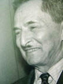

(1889 – 1956)

"Çalıkuşu" romanının kahramanı Feride, Cumhuriyetin ideal öğretmen kızı olmanın dışında, Türk edebiyatının da ilk popüler roman kahramanı olmuştur. Romanlarının geniş kitlelere hitap etmesi nedeniyle Güntekin, hâlâ büyük keyifle okunan ilk dönem yazarlarımızdandır.
Reşat Nuri Güntekin, 27 Kasım 1889'da askeri doktor olan Nuri Bey ile Erzurum valisi Yaver Paşa'nın kızı Lütfiye Hanım'ın oğlu olarak İstanbul'da doğdu. Öğrenim hayatı boyunca birçok il gezen Güntekin ilköğrenimine Çanakkale'de başladı. Daha sonra Galatasaray Lisesi ve İzmir'de öğrenim görüp sınavla girdiği Darülfünun Edebiyat Şubesi'ni 1912'de bitirdi.
İlk olarak Bursa'da başlayan öğretmenlik hayatına 1927 yılına kadar birçok okulda devam etti. Bu okullar arasında İstanbul Beşiktaş İttihat ve Terakki Mektebi, Fatih Vakf-ı Kebir Mektebi, Akşemseddin Mektebi, Feneryolu Murad-ı Hamis Mektebi, Osman Gazi Paşa Mektebi, Vefa Lisesi, İstanbul Erkek Lisesi, Çamlıca Kız Lisesi, Kabataş Erkek Lisesi ve Galatasaray Lisesi bulunmaktadır. Türkçe ve Fransızca öğretmenliğinin yanında 1916 ile 1919 yılları arasında Erenköy Kız Lisesi'nde ve Vefa Lisesi'nde müdürlük de yaptı.
Yazı hayatına I. Dünya Savaşı'nın sonlarında başlayan Reşat Nuri Güntekin'in ilk eseri Eski Ahbap isimli uzun öykü, 1917'de Diken dergisinde yayınlandı. 1819-1919'da Zaman gazetesinde Temaşa Haftaları başlığıyla tiyatro eleştirileri yazdı. Bu dönemde Şair Nedim, Büyük Mecmua, İnci, Diken dergileri ile Dersaadet ve Zaman gazetelerinde yayınlanan öykü, roman ve oyunlarında kendi adının yanısıra Hayrettin Rüştü, Mehmet Ferit ve Cemil Nimet gibi takma isimler de kullanıyordu. Mizah ve magazin yazılarını da "Ateşböceği", "Ağustosböceği", "Yıldızböceği" gibi isimlerle yayımladı. İlk romanı olan Çalıkuşu'nu 1923 yılında yazdı. Bu romanı önce İstanbul Kızı adıyla oyun olarak yazmıştı. O dönem koşullarında sahneye konulması mümkün olmayınca oyunu romana dönüştürdü. Türk edebiyatında gerçekçi romana yönelimin ilk örneklerinden olan Çalıkuşu; dili, anlatımdaki rahatlığı, duygusal yanlarıyla uzun yıllar güncelliğini koruyan bir eser oldu. Birçok kez sinema ve televizyona uyarlandı. Ardından 1924'te Damga, Dudaktan Kalbe ve 1926'da da Akşam Güneşi adlı romanlarını yayımladı.
Reşat Nuri Güntekin, 1927 yılında maarif müfettişi olarak bütün Anadolu'yu dolaştı ve Dil Heyeti'yle birlikte bazı çalışmalar yürüttü. Yazdığı romanlarda, Anadolu'da yaptığı gezilerin izleri bulunmaktadır. Birçok insan tanımış olması ve görevi nedeniyle birçok şehirde bulunması, onun daha iyi gözlem yapmasına ve hikayelerindeki karakterlerin daha gerçekçi olmasına zemin hazırladı. 1927'den sonraki romanlarında da üslubunun temel yapısını değiştirmeden toplumsal sorunlara değindi. Ayrıca gezilerini kaleme aldığı Anadolu Notları adlı kitabını daha sonra 1936 yılında yayımladı. 1928 yılında, Acımak adlı romanını yazdıktan sonra yaklaşık on yıl yazmaya ara verdi. Bu dönemde politikaya girerek 1939 yılında Çanakkale milletvekili seçildi. Ünlü eseri Yaprak Dökümü'nü de aynı yıl yazdı. 1946 yılına kadar milletvekilliği yaptıktan sonra 1947 yılında Milli Eğitim Başmüfettişliği'ne getirildi. Aynı yıl Cumhuriyet Halk Partisi'nin Ankara'da yayımlanan Ulus adlı gazetesinin İstanbul kolu olan Memleket gazetesini çıkardı.
1950 yılında Paris'te Kültür Ateşesi ve UNESCO'da Türkiye temsilcisi olan Güntekin, 1954 yılında emekliye ayrıldı. Bir süre İstanbul Şehir Tiyatroları'nda edebi kurul üyeliği yaptı. Kendisine akciğer kanseri teşhisi konulduktan sonra tedavi için Londra'ya gitti; ancak hastalığına yenik düşerek 7 Aralık 1956 tarihinde vefat etti ve 13 Aralık 1956'da İstanbul'da, Karacaahmet Mezarlığı'nda toprağa verildi.
Romanları: Çalıkuşu (1923), Gizli El (1924), Damga (1924), Dudaktan Kalbe (1924), Akşam Güneşi (1926), Bir Kadın Düşmanı (1927), Yeşil Gece (1928), Acımak (1928), Yaprak Dökümü (1939), Değirmen (1944), Kızılcık Dalları (1944), Miskinler Tekkesi (1946), Harabelerin Çiçeği (1953), Avrupa Yakası (1961), Son Sığınak (1961), Kan Davası (1962), Ateş Gecesi (1953), Gökyüzü (1935), Eski Hastalık (1938)